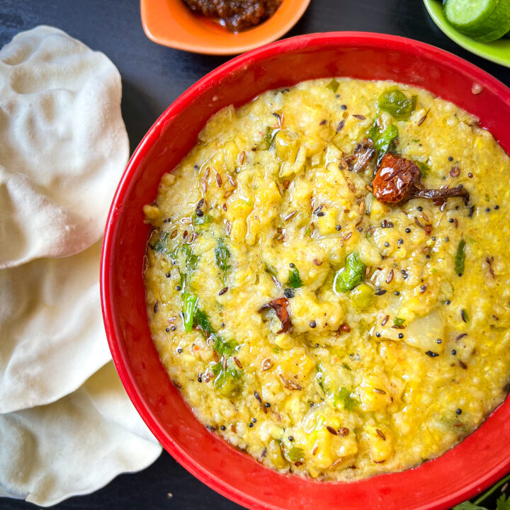

A nourishing one-pot meal often called the “yogi’s comfort food.”

½ cup basmati rice
½ cup yellow moong dal (split mung beans)
4 cups water
1 tsp cumin seeds
1 tsp grated ginger
1 small carrot, diced
1 handful spinach or seasonal greens
½ tsp turmeric powder
1 tsp ghee (clarified butter)
Salt to taste
Wash rice and dal thoroughly.
Heat ghee in a pot, add cumin seeds and ginger, sauté until fragrant.
Add turmeric, rice, dal, and water.
Cook on medium heat until soft and creamy.
Add vegetables halfway through cooking.
Serve warm with fresh coriander.
Easy to digest, balances all doshas, and provides protein, fiber, and gentle nourishment. You can refer to The Healing Power and Health benefits of Khichdi for detailed information.